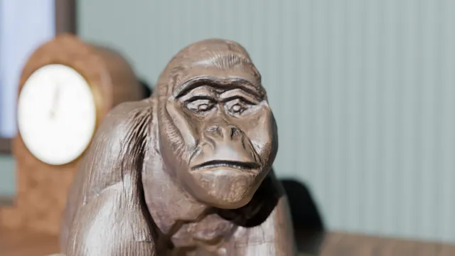
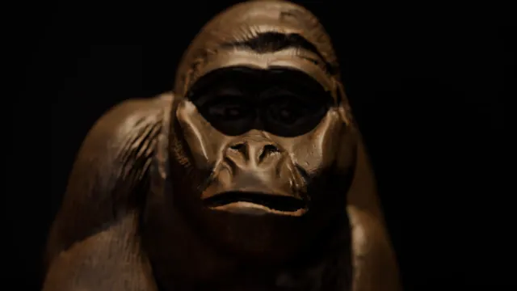
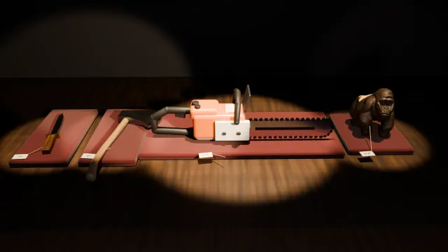
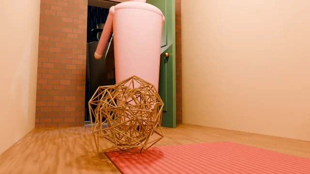
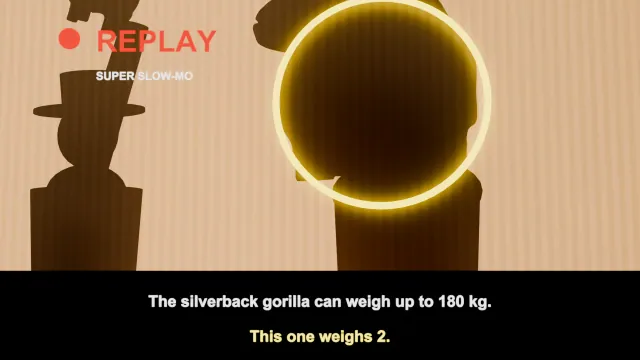
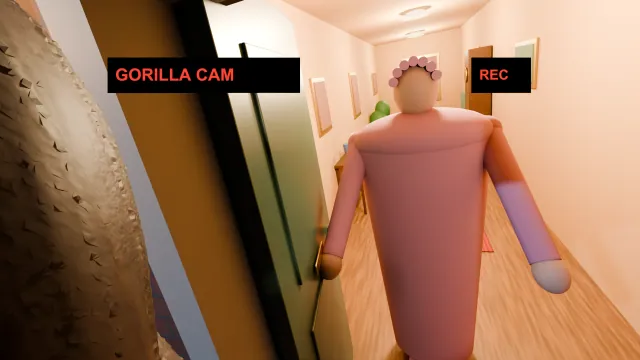

SILVERBACK
A 141-second comedy slasher short in Blender, starring a scanned wooden gorilla statue
Shots
-

View larger1 Lightning reveals the gorilla statue on the shelf -

View larger2 Close-up of the reconstructed carved-wood gorilla -

View larger3 Western-style weapon choice: knife, axe, chainsaw or gorilla -

View larger4 Standoff in the hallway, with tumbleweed -

View larger5 Slow-motion sports-style replay of the hit -

View larger6 GORILLA CAM: the statue's point of view


SILVERBACK is a short comedy slasher film made in Blender: it opens as a dark horror piece and turns into a farce about a killer, a chainsaw and two gorilla statues. Every set, camera, light and animation is built by Python scripts rather than edited by hand, so timing changes ripple through the whole film from one shot list. The gorilla is a 3D reconstruction of a real carved wooden statue, made from a phone video with photogrammetry. The soundtrack is assembled by script from royalty-free field recordings plus a few synthesised parts.
Highlights
- 28 shots, 141 s at 24 fps, 3,384 frames rendered at 1080p across three parallel Blender instances
- Whole film rebuilt from scripts: one timeline file drives every event, camera and sound cue
- Hero statue reconstructed from a phone video of the real carving: 1M-triangle model with 8K texture
- Soundtrack mixed by script from about 70 royalty-free recordings plus synthesised organ and toy keyboard
- 12 preview drafts iterated on director feedback before the final render
- Period
- NOV 2026
- Status
- working
- Kind
- film
- Stack
- Blender 5.2 (Cycles)
- Python (bpy)
- FFmpeg